Computers
My brief history of first computers that I can remember, Many PCs are not here after the year 2000 as they swapped and changed so often.
| Interstate 1160 (1977) |
1980's |
|
I remember the orange and turn nob controller's. This is the first I can remember and at a very young age I don't really remember what I thought of it. I most likely would of preferred my Lego though. |
| Mitsubishi MSX |
1980's |
|
I cant remember when or how this was brought but I remember playing some games on it round my nan and granddads after school and trying hard to understand what I was doing. I never got very far but I did manage to load up some games from tape somehow. I always liked the arrow keys and the rectangle function keys. |
| Acorn Electron |
1980's |
|
I remember having this machine for a short time but very little else. It had a cover and that's all I really remember about it. I was given a zx81 but at a young age, didn't know what to do with it. I had no power supply so never had any use, I liked the look as at the time it looked futurist but I believe it was sold not long after so never played it. |
| Psion ii |
1980's |
|
I never owned it, my mum got this from work and it was very expensive. I played around with it and broken the system so much that the tech support at her work could not fix it and so I was banded from ever touching it again.. whoops'.. |
| Donkey Kong LCD |
1980's |
| 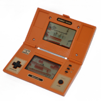 |
I had one of these now rare LCD games from buying or trading at school. Not sure what ever happened to it. |
| Race Game LCD |
1980's / 90's |
|
Race LCD game, brought from Argos and played for hours |
| Vic 20 |
1980's / 90's |
|
I am not sure how I got this, I remember having this in my bedroom and mostly playing a chess game as that was on cartridge and was super quick to load up before school in the morning. |
| Nintendo Gameboy |
1980's / 90's |
| 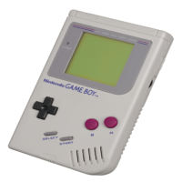 |
Year 8 in bury. My dad used to play this too. Tetris and Mario were the main games but I had Jurassic park, Alfred chicken and others played JP round my nans and had the light magnifier too. |
| Atari Ste 520 |
1980's / 90's |
| 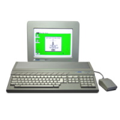 |
So many memory's. Dad brought this for midi music and stinberg software. Upgraded to 1mb ram (so was basically a 1040) my fav games at the time turrican 2, robocod, dizzy Treasure island and fastfood, lotus turbo challenge. Amazing machine, in the end I sold it on ebay 15 years or so later. I regret that now.. |
| Gameboy Color |
1980's / 90's |
| 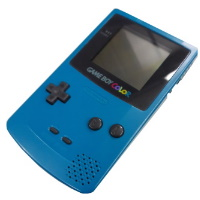 |
Had one for a while, cant remember it very well apart from it was not backlit so it was really hard to see the screen. |
| SEGA Master System II |
1980's / 90's |
 |
Brought new and in the days when toys r us had the carts and showed pictures on the wall. It had alex the kidd built in , had about 20 games. It was good but always remembered that the megadrive was so much better (sonic) but then I played the megadrive and snes round other peoples houses, these were the days you could rent games from backstreet shops. |
| Amiga CD32 |
1980's / 90's |
| 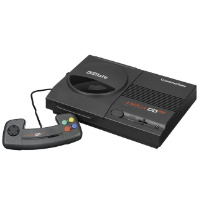 |
Again I don't know where I got this from, I remember that when I did work experience in London in IBM tech repair I had this round my uncles. Loved it. Superfrog and jetstrike (best game ever) and had loads of other games. Sold to a mate at the time as he also loved jetstrike. |
| Sony Playstation |
90's |
| 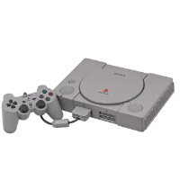Currently Own x2 |
Got in 1995 for xmas . WOW I remember playing wipeout and was amazed at everything. So many memorys and this was an amazing machine. I do remember having to send it back to sony after about a year as the cd drive packed up (common issue). I had a few of these as I swapped consoles around. I still have a psone(white one) these days and a collection of the games. My favs were wipeout 2097, ridge racer, twisted metal, worms, rayman, tekken 2 |
| Nintendo Gameboy Advanced |
90's |
| 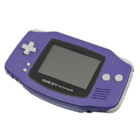 |
After getting rid of the gameboy, got this one as an upgrade. The best thing was the colour and back light! |
| Nokia NGage |
90's |
|
Brought second hand, its a phone and gaming console. Had a couple of games but they were pricy, weren't good to play and you had to turn off the phone and remove the back to put a new game in which sucked. was never easy as a phone either so it went. |
| Nintendo N64 |
90's |
 |
I sold the Playstation to a friend at the time to buy from choices video at £100. I had no money to buy games so rented some for a few weeks. Ended up with quite a few games and had a lot of fun with Mario 64, Goldeneye and Duke Nukem 3D. As another friend had one too, we swapped games and had the fights from multiplayers. This was the best multiplayer experience ever! |
| SEGA Dreamcast |
90's |
|
Crazy taxi, the vm card in the controller was amazing and chuchu rocket came with it. Never had loads of games, had a sonic what was ok and played a racing game all the time. |
| Nintendo GameCube |
90's |
| 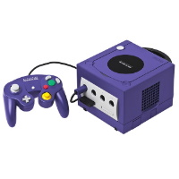 |
Had Mario Sunshine and Zelda. Both were great but I didnt have it for very long. |
| Sony Playstation 2 |
90's |
| Currently Own |
Timesplitters 2 was amazing. It was good but never filled the gap the PS 1 had. |
| Namco TV box |
00's |
| 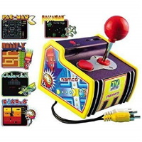 |
Brought to play in the car on the media system installed. |
| Nintendo Wii |
00's |
| 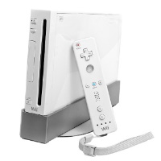 |
Got Christmas the 2nd year it was out as it was sold out. Amazing at the time. Wasted so much money in the store and had loads of games for it. Kept for about 4 years then sold on before it lost all value |
| xbox 360 |
00's |
|
I remember the first time I saw 720p HD from this. Fallout 3 I lost weeks of my life too. I also purchased a HDD from ebay as mine didn't have one, I waited quite a while and was worried as red ring of death was hitting so many units. |
| Nintendo DS Lite |
00's |
|
Traded in I think for the DSI as that had wifi and Nintendo shop and so don't remember much on this. |
| Nintendo DSI |
00's |
|
DSI online access, but it was poor at the time. |
| AT Games |
00's |
| 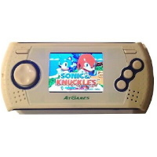Currently Own |
Megadrive games, about 20. Is OK but the small screen battery killing are a pain. |
| Ouya |
00's |
|
Wow.. That was a flop of a machine for so many reasons. It was an Android 4 unit that had really bad controller and the games were pritty poor too. A few years later, I noticed that they removed the demo/playable test feature and the company changed other things that they said they would never do. I sold it to CEX before it was worth nothing. It was £100 and I think I got £25 back. |
| Sony PSP |
00's |
 |
Theme park, jumping flash were the games I always played. UMD were quite cool too but this was near the end of its life as the plug got pulled on it from Sony |
| Nintendo 3DS |
10's |
| 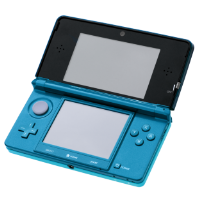 |
3D! yes this was cool. Just didn't play it much and the games were pricy. |
| Nintendo DS Lite |
10's |
| 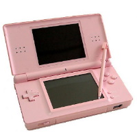Currently Own |
Got given a pink one as it was being binned. Kept and brought a charger and kept it as they are worth so little. |
| Nintendo Wii U |
10's |
| 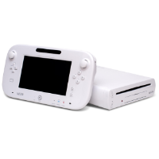 |
It was ok, just charging the controller was a pain and not many games. Had Mario bros and zombie game. |
| Sony PS3 |
10's |
| 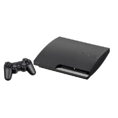 |
Got one for xmas/bd had over 20-30 games. It was WAY too expensive on launch, loved tomb raider and drake. But the updates/downloads really pissed me off, then to top it off when the PS4 came out, nothing was backwards compatible! |
| Sony PS one |
10's |
| 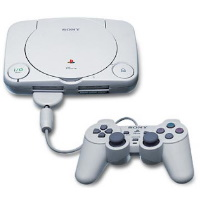Currently Own |
Picked it up cheap and re-collected my games again. Just love the PS1 although I prefer the older type to look at. |
| C64 Mini |
10's |
 |
Just couldn't get into it. I think its because its a emulator box and just not the real thing. Had a lot of great features but the full size one is now out and I think that look much better with a working keyboard. It just reminded me of a Raspberry Pi in a box. Traded in to CEX for a new GPU for the PC. |
| Nintendo NES Mini |
19's |
| Currently Own |
I've now Hacked mine and its not bad. Mario games and micro machines are on it. Got for £25, just the controller leads are very short. |
| Nintendo SNES Mini |
19's |
| Currently Own |
Again I Hacked it and its amazing. Mario Kart and many others. |
| AT Games Megadrive |
2021 |
| 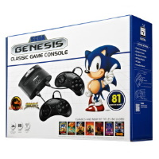Currently Own |
I know, its AT Games.. They have the worse rep ever. This has 80 games, most are really bad, but about 10 or so are good. At the time its selling for £100, not worth it at all but I managed to ebay win one for £25 and it is worth it for that price. The great thing is that you can put games in the slot but its really let down by its sound chip. Really let down by the sound, it just feels off-key and slow. Also some games do not work 100% when putting the cartridge in. I will keep it and this has lead me to buy a real megadrive.. |
| SEGA Megadrive 1 |
2021 |
| Currently Own |
Its a 1990's SEGA MegaDrive ! Love it.. Sound is so much better than the AT Games version and also games work as they should. |
Original PC Collection
I have had many, many PCs over the years. But these are the ones that I started with and hold a lot of memories for me.
| Amstrad 640 laptop |
90's |
|
Windows 3.0, DOS 3, LCD and CGA external. I remember that I had to turn on the screen from the other side of the room as the static was so bad. Thinking about it now, clearly it wasn't safe to use... |
| Amstrad 1640 with 20mb hdd |
90's |
| 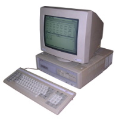 |
Windows 3.0/3.1 with DOS 3.2. Learnt a lot from this machine and played many great games. 4D Stunt cars, Bio Menace, Keen, Police Quest being a just a few. The 20MB HDD always failed. 5 1/4 inch drive was standard and later installed 3 1/2 inch drive. This had an EGA screen and I think it was about 8mhz CPU. I also created QBASIC games and Batch scripts on this PC. |
| Amstrad 486 SX 33 |
90's |
|
DOS 6.22 and Windows 3.1, First modem 15k installed and had to cut the case. Dogz game and Doom 1 and 2 (but ran slow) VGA Graphics too. The SX chip did not have a maths co-processor and ran at 8mhz, and turbo speed of 33mhz. Remember turbo buttons? they were great... |
And I have now just part restored a Pentium II that will be my classic Windows 98 SE machine when finished.